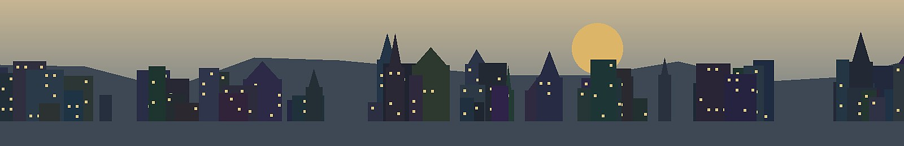

Destination Value
Destination Value describes the demand-side reason why people voluntarily spend time and money to reach a place. For short-term rentals, it is often more important than the apartment’s internal design.
TL;DR
- Guests usually do not travel because of a bathroom, a sofa or a coffee table. They travel because a place has identity.
- A strong destination has a reason to go: sea, old town, mountain, lake, event, food, culture, university, hospital, port or family network.
- The best apartment does not replace weak destination demand; it amplifies existing destination demand.
- Views, balconies and historic staircases matter because they connect the accommodation to the reason for the trip.
- Investor question: Why would someone choose this city, this district and this building over the alternatives?
Definition
Destination Value is the tourism and mobility value of a place. It is the reason why people travel there even when other places are easier, closer or cheaper. In investment terms, it is a demand foundation. Without Destination Value, an apartment must compete mainly on price. With strong Destination Value, the apartment can participate in a larger story: the old town weekend, the beach escape, the family visit, the event trip, the university stay, the port city experience or the Mediterranean balcony morning.
Everyday example: Bern and Marzili
A useful analogy comes from Bern. The Marzili is not merely an outdoor pool. It combines the Aare, the historic silhouette of the federal city, public accessibility, summer identity and a ritual that people associate with Bern itself. People travel across cantonal or even national borders for experiences that locals may underestimate. This is highly relevant for property investors: the value of a place is not defined only by residents. It is also defined by visitors who assign emotional meaning to the place.
Application to Genova
Genova’s Destination Value is not only “Italy” or “sea”. Its stronger story is the combination of old port city, dense historic centre, hills, railway accessibility, aquarium, Mediterranean climate, Ligurian food, university presence, cruise traffic and access to the Riviera. A guest may book a flat because it allows them to experience several of these layers at once. A balcony with harbour and sea view is therefore not merely a balcony; it becomes part of the destination product.
Application to Gdańsk
Gdańsk offered a different but equally instructive pattern: old town tourism, Baltic Sea access, stadium events, domestic summer travel and a growing modern apartment stock. Letnica looked less obvious than the old town, but real Booking data and field observation showed that beach, stadium and summer flows could still create demand. The lesson is that Destination Value should not be assessed only by postcard centrality. It must be tested against actual guest behaviour.
Investor framework
| Layer | Question | Example |
|---|---|---|
| City value | Why does anyone travel to the city? | Genova: port, old town, coast, food, university. |
| District value | Why this district instead of another? | Letnica: beach-stadium hybrid; Prà: possible sea-view value if rail access works. |
| Building value | Does the building strengthen the trip? | Historic staircases, rooftop terraces, sea views, balconies. |
| Unit value | Does the flat deliver the promise? | Comfort, sleep quality, layout, Wi-Fi, photos, reviews. |
Typical mistakes
- Confusing a pretty apartment with a strong destination.
- Assuming locals and visitors value a place in the same way.
- Ignoring day-trip patterns that may convert into weekend stays.
- Buying a view without testing access, noise, safety and guest logistics.
- Evaluating a city only through hotel prices or Airbnb screenshots without visiting.
P1 Insight
The P1 process gradually shifted from “Which apartment is best?” to “Why would guests come here, and how does this unit strengthen that reason?” This is a more mature question. It recognizes that short-term rental performance is not created by furniture alone. It is created by the interaction between destination, micro-location, building and operating quality.
- Identity: Can the city be explained in one memorable sentence?
- Demand diversity: Are there tourists, students, business travellers, family visitors, event guests or medical/university demand?
- Seasonality: Does the city rely on one short peak, or does it have multiple demand cycles?
- Accommodation fit: Does the apartment type match the guest segments?
- Regulatory risk: Is short-term rental accepted, restricted or politically sensitive?
Destination scorecard
The P1 framework treats Destination Value as a filter before detailed underwriting. If a city lacks a clear travel reason, the property must be exceptionally cheap or serve another use case, such as long-term rental. If the city has strong Destination Value, the next task is to identify which micro-locations translate that value into bookings without creating operational problems. This is where the BT Pilot Trip and Destination Value become one method: first understand why people come, then test where staying makes sense.
There is also a risk side. Strong destinations attract competition, regulation and community tension. If Airbnb “works too well,” local frustration may rise and rules may tighten. Destination Value therefore has to be paired with regulatory due diligence. A strong city is not automatically a safe investment environment. The investor must ask whether the demand can be captured legally, operationally and sustainably.
Destination Value also helps explain why locals often underestimate places. A resident may stop noticing the river, old town, beach or railway convenience because it is part of daily life. A visitor sees it as scarce. The investor must therefore avoid both local cynicism and tourist fantasy. The right question is not “Would a local be impressed?” but “Would the target guest pay for this experience, and would the property help them access it?”
The third layer is the building and unit promise. A flat can either support or dilute the destination. A sea-view balcony supports a coastal city. A historic staircase supports an old European city. A rooftop terrace supports a skyline or harbour district. A generic grey interior may be acceptable, but it rarely strengthens the trip. In a competitive short-term rental market, the best units help guests feel that they are staying “in” the destination, not merely sleeping near it.
The second layer is the district promise. A city can be attractive while a district remains unsuitable for short-term rental. A district must either be close to the main promise or offer a credible alternative promise. Letnica was not the old town, but it combined beach, stadium, new apartments and improving infrastructure. Prà in Genova may not be the historical centre, but if rail access, sea view and local comfort work, it could serve a different guest or tenant logic. The key is not whether a district is famous. The key is whether its reason to stay is clear.
The first layer is the city promise. Genova promises port-city atmosphere, food, history, sea, hills and access to Liguria. Gdańsk promises Hanseatic old-town identity, Baltic summer, shipyard history, domestic tourism and an airport-connected regional city. Bern promises old-town beauty, Aare culture and a Swiss capital experience. These promises are not marketing slogans only; they shape guest willingness to travel. The stronger and more specific the promise, the less the property has to compete only on price.
Destination Value is the demand engine beneath the accommodation. A beautiful apartment in a place without a reason to visit is an interior-design project, not necessarily an investment. Conversely, a modest but well-positioned unit in a destination with strong identity can perform because the city does part of the selling. The investor must therefore separate three questions: why the city, why the district and why this unit?
Deep investment doctrine
Sources & further reading
- UN Tourism — general background on destination competitiveness and tourism demand.
- AirDNA — market-level short-term rental indicators.
- Booking.com and Airbnb — observable demand signals, reviews and guest language.